Function
- Identification of unknown small molecules from high resolution, accurate mass spectrometry with reference standard data is not possible for complex samples, e.g. in metabolomics.
- MetFrag proposes tentative identifications.
Functional Principle

- candidate selection
- in silico fragmentation
- scoring/ranking
Algorithm

- candidate structure
- preprocess, e.g. H2O, HCN
- systematic bond disconnection:
- linear: single split
- ring: double split
→ in sillico fragmentation tree
- fragments explain measured peaks
- modified peak count scoring: mass/intensity
- Not intended to be a physical model!